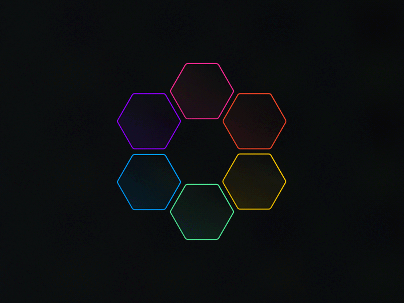
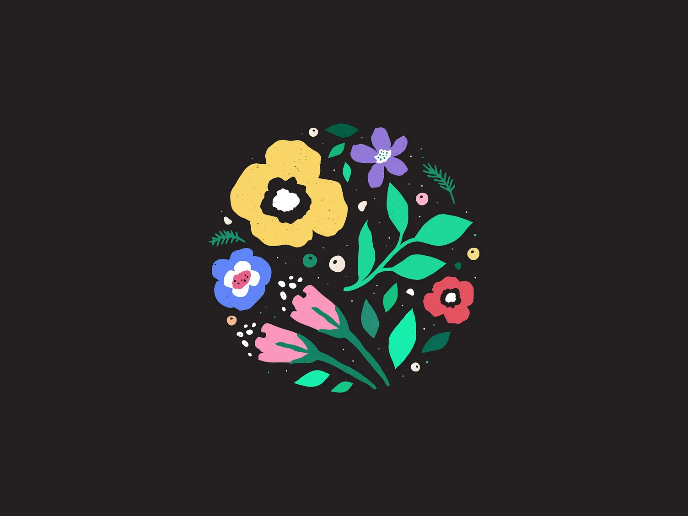

My Projects
Tic-Tac-Toe Game
A classic Tic-Tac-Toe game built with pure HTML, CSS, and JavaScript. This project showcases fundamental game logic, DOM manipulation, and state management.
- Implemented game state management for turns and board status.
- Designed intuitive UI for player interaction.
- Developed win condition checking algorithms.


Simon Game
An interactive memory game inspired by the classic Simon game. This project demonstrates skills in handling asynchronous events, managing sound effects, and creating a dynamic user experience.
- Implemented asynchronous sequences for game patterns.
- Managed user input and sequence matching logic.
- Integrated sound effects for enhanced feedback.
Flower Shop Website
A modern, responsive e-commerce landing page for a flower shop. This project highlights proficiency in front-end design, responsive layout, and engaging UI/UX.
- Designed a clean and appealing user interface.
- Implemented responsive design using Flexbox and Grid.
- Showcased product display and calls to action.

Unlink File System Utility
A conceptual backend project demonstrating secure file system operations, specifically file deletion (unlink) using server-side languages.
- Explored secure file handling practices.
- Implemented file existence checks before deletion.
- Showcased backend logic for system interactions.